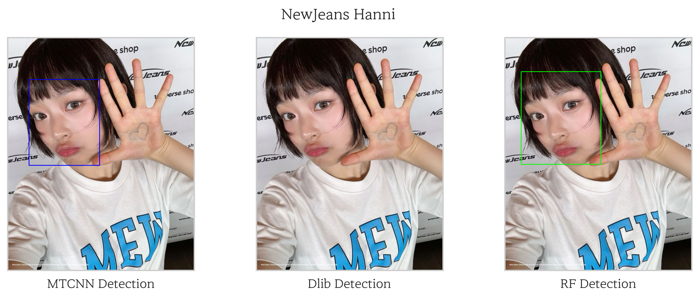
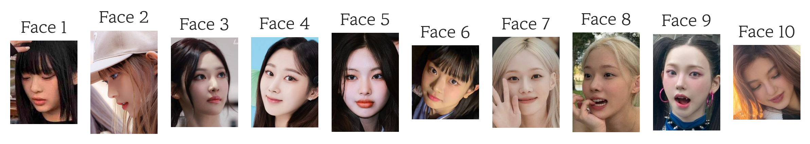
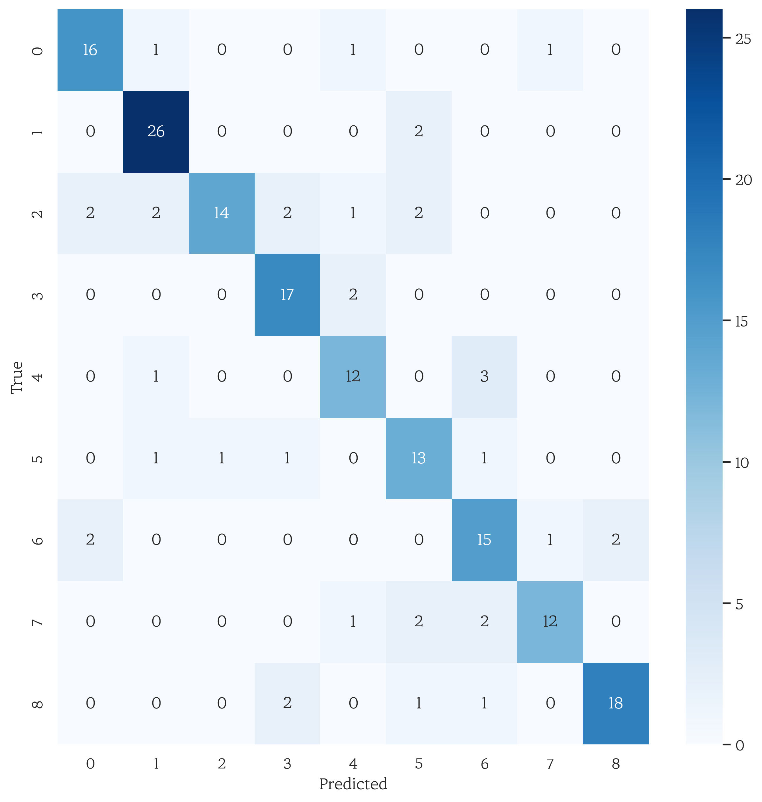
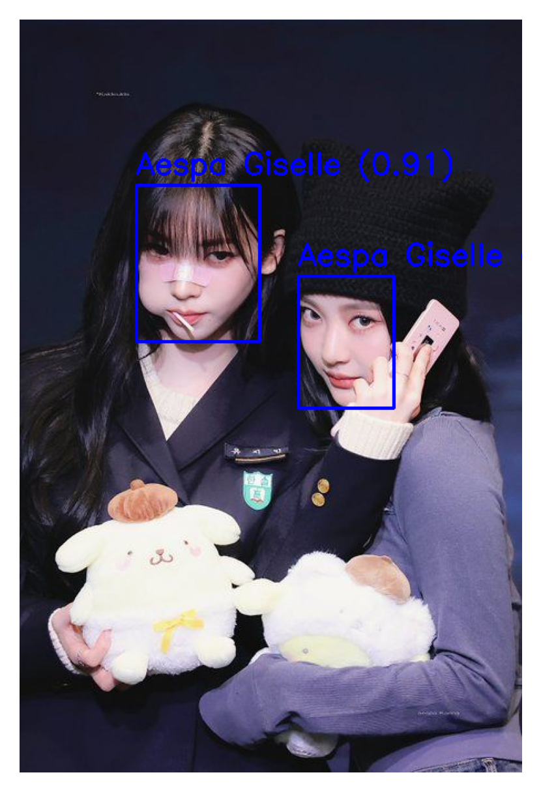

얼굴 인식 (Face Recognition)
얼굴 인식은 사람의 얼굴 특징을 식별하고 분석하여 개인을 고유하게 식별하는 데 사용되는 기술입니다. 주로 컴퓨터 비전과 패턴 인식 기술을 기반으로 하며, 광학적 또는 사진 기법을 통해 사진이나 비디오에서 얼굴을 감지하고 분석합니다. 보안 시스템, 사용자 인증, 의료, 마케팅 등 다양한 분야에서 활용되는 등, 가능성 또한 광범위합니다.
이 글에서는 이처럼 여러 측면에서 활용 가능한 얼굴 인식 시스템을 만들고 탐구해봅니다. 이 포스트에서는 케이팝 아이돌 Aespa 4명, NewJeans의 5명의 멤버들 총 9명의 얼굴을 이미지 내에서 탐지하고 인식하는 과정을 소개하겠습니다.
1. 데이터
시스템에 필요한 데이터를 수집하는 것이 첫 번째 과정입니다. 저는 Pinterest에서 각 인물 당 이미지 약 200장 정도를 저장했습니다. 이 부분은 프로그래밍으로 하지 않고 WFDownloader라는 프로그램을 사용해 이미지 벌크를 보다 쉽게 다운로드 할 수 있었습니다. 이미지 검증 과정이 부족할 관계로 이미지의 명확성을 위해 ’그룹 이름 + 멤버 이름’으로 검색합니다.
2. 얼굴 감지 단계
파이썬으로 얼굴을 감지하는 모듈에는 여러 가지가 있고, 이들 모두 쉽게 활용할 수 있습니다. 저는 그 중 MTCNN, Dlib, InsightFace 3가지를 비교해 보았습니다. 3개 모두 파이썬 패키지 외에 별 다른 설치 없이 사용할 수 있습니다.
수집한 이미지 데이터들 중 무작위로 선택한 이미지에서 각각 얼굴을 찾아내고 이를 시각적으로 비교해 보았습니다. 
일부 이미지에서 다음과 같이 성능의 차이를 보입니다. 걸그룹 특성 상, 셀피가 많고 이 경우엔 카메라 각도가 일반적이지 않은 관계로 정교하지 못한 모델은 생각보다 얼굴 감지에 어려움이 있는 듯 했습니다. 따라서 가장 성능이 뛰어난 RetinaFace를 사용하겠습니다.
사실 RetinaFace는 많은 경우에 현재까지도 정확도와 속도 측면에서 최고 수준의 성능(State-of-the-art)을 달성하고 있습니다. 특히 다양한 크기와 방향의 얼굴을 처리하는 데에 강점을 가지고 있어 시스템의 목적에도 알맞은 모델이기도 합니다. 다만 딥 러닝 모델인 만큼 어느 정도의 부하가 있습니다.
아래는 RetinaFace를 이용한 얼굴 감지 결과입니다. 
3. 이미지 전처리
얼굴을 인식하기 위해서는 얼굴 이미지를 학습 시켜야 합니다. 하지만 이 전에 수집한 이미지로는 이미지에 얼굴 만이 아닌 다른 요소가 많기 때문에 제대로 학습 시킬 수 없습니다.
이 때문에 얼굴 감지가 필요한 것입니다. 얼굴 감지를 사용하여 얼굴을 중심으로 이미지를 잘라 저장합니다.이때 얼굴이 2개 이상일 때는 cv2의 Laplacian 메소드를 이용해 감지된 얼굴의 선명도를 비교하고 기준 이상 다를 경우 선명한 얼굴만을 잘라내고, 비슷할 경우엔 해당 이미지를 버리는 방식으로 처리했습니다. 이는 사진의 주인공이 흐릿하게 나올 시에는 부정확하게 처리 될 수도 있다는 점에서 개선이 필요합니다.
잘라낸 이미지들의 일부는 다음과 같습니다. 
훈련할 모델은 이미지 처리에 특화된 ResNet-50입니다. 이 때문에 훈련을 위해서 행해야 할 전처리 과정은
- 이미지의 크기를 224 x 224로 조정
- 정규화
- 데이터의 이미지와 레이블을 (X, Y)로 나누고
- 8:1:1 비율로 train, validatoin, test 데이터 셋을 나눕니다.
데이터 셋의 크기가 작은 만큼 데이터 증강(Data Augmentation)도 도움이 될 것입니다.
4. 훈련
훈련에 필요한 손실 함수는 Cross Entropy Loss을, 최적화 함수는 Adam을 사용하겠습니다. 훈련 전에 ResNet-50을 로드하고 출력 계층을 카테고리의 길이와 같이 설정하는 것을 잊지 마세요. 제 경우엔 출력 계층의 크기, 곧 len(categories)는 9가 됩니다.
100%|██████████| 20/20 [05:29<00:00, 16.49s/it] Validation Loss: 0.8527, Validation Accuracy: 0.8111
80% 정도의 정확도를 확인할 수 있습니다.
5. 평가
Confusion Matrix를 통해 테스트 셋에서의 정확도를 확인해 보겠습니다. 
언뜻 보기에는 모델의 정확도에는 문제가 없어 보입니다. 실제 사진에 모델로 예측해본다면 어떨까요? 예를 들어 얼굴이 두 개 있는 새로운 사진 말입니다.
이는 1. 모델을 불러오고, 2. 이미지에서 얼굴을 감지한 후, 3. 얼굴 이미지를 모델이 처리할 수 있는 형태로 transform(정규화, 텐서화 등) 하면, 4. 모델이 해당 이미지의 예측 결과를 출력하는 순서로 진행됩니다.

확인 결과 이 외의 사진에서도 대부분의 사람을 한 사람으로 예측하는 등 정확도가 크게 떨어지는 것으로 나타났습니다. 본 적 없는 사진에 대해서 낮은 정확도를 보여주는 듯 합니다.
6. 결론
9명의 이미지를 어느 정도는 식별하는 데 성공했지만, 모델의 단순성에 비해 사용자 정의에 대한 유연성이 떨어지기 때문에 제공한 톤 앤 매너가 비슷한 아이돌의 사진은 구분하기 힘들어 하는 모습을 보입니다. 따라서 저는 다른 방법을 통해 얼굴 인식 시스템을 만들어 보도록 하겠습니다.
이어서 얼굴 인식에 최적화된 InsightFace를 통해 얼굴에서 임베딩을 추출하고 이를 통해 유사한 얼굴을 인식하는 조금 더 나은 모델을 만들어 보겠습니다.
읽어주셔서 감사합니다.
Ciao!
참조
NBA Face Recognition System using InsightFace - Yongsun Yoon